Versão de outubro de 2026As telas são do grupo de teste
Capítulo 1
Primeiros passos
O KING BT é o app do grupo de beach tennis: competições, placares, ranking e a análise de jogo ponto a ponto (King Scout). Funciona no navegador do celular e como aplicativo Android.
Abra o app pelo endereço do grupo (kingbt.web.app) ou pelo aplicativo instalado. A abertura mostra a vespa do KING BT e, em seguida, a tela de entrada.
Toque em Entrar com e-mail e use o seu e-mail e senha. Quem ainda não tem conta toca em Criar conta.
Escolha o grupo. Você pode participar de mais de um; o grupo ativo aparece em destaque e dá para trocar a qualquer momento. Para entrar em outro grupo, digite o código de convite e toque em Entrar.
Instale o app. No celular, use o menu do navegador e escolha Adicionar à tela inicial; no Android também há o aplicativo (APK) do grupo. O app avisa quando existe uma versão nova: toque na barra de atualização.
As telas deste manual foram capturadas em um grupo de teste, por isso os jogadores têm nomes como A, B, C e Joffre.
Capítulo 2
Início
A tela Início resume o que importa para você no grupo.
Pendências mostra o que espera por você: jogos sem placar, colegas para avaliar e pedidos de inscrição. Toque numa linha para ir direto ao assunto.
Sua posição mostra onde você está no ranking do grupo e quantos pontos tem.
Acontecendo no grupo lista as novidades: primeiras vitórias, subidas no ranking e resultados. “Ver tudo” abre o Feed completo.
A barra de baixo leva às quatro áreas: Home, Arena, Competições e Perfil. O botão amarelo + abre os atalhos (veja o capítulo 5).
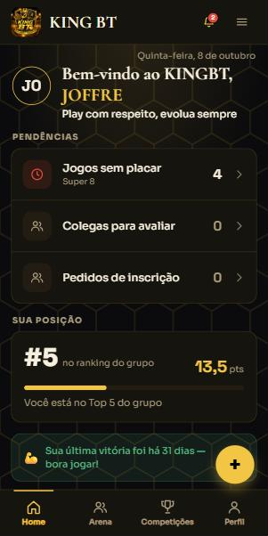
Início: pendências, posição e novidades.
Capítulo 3
Arena: Feed, Ranking e Atletas
A Arena reúne a vida do grupo em três abas.
Feed: as conquistas e os resultados do grupo. Dá para reagir (👑 🔥 💪) e comentar. O placar dos jogos usa o mesmo desenho do resto do app: nomes brancos e o game ganho em verde.
Ranking: pódio dos três primeiros e a tabela completa. Os filtros Este mês, Temporada e Acumulado mudam o período.
Atletas: a lista dos jogadores do grupo. Toque num nome para abrir o perfil dele.
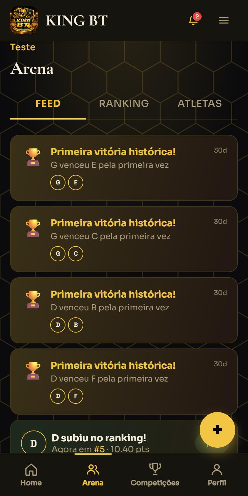
Feed do grupo.
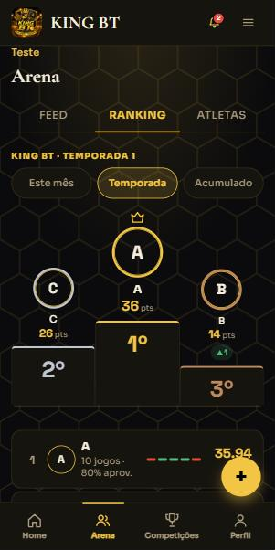
Ranking, com o pódio.
Capítulo 4
Competições
Todas as disputas do grupo ficam na aba Competições.
Na lista, cada competição mostra o tipo (Super 8, Avulso, Liga…), a data, o número de jogadores e uma barra com os jogos já registrados. Use Todas, Agendadas e Em andamento para filtrar, e a lupa para buscar.
Ao abrir uma competição, a aba Partidas mostra a classificação (V vitórias, D derrotas, GP games pró, SALDO e PTS) e o progresso (por exemplo, 8/14 jogos).
Mais abaixo ficam os jogos. Cada cartão tem uma linha por dupla e uma coluna por set (“SET 1”). O game ganho aparece em verde. O jogo seguinte vem destacado com o selo PRÓXIMO.
A aba Regras explica o formato de disputa (sets, games, tie-break).
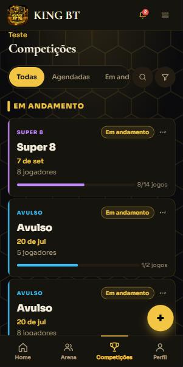
Lista de competições.
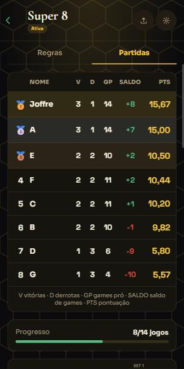
Classificação e progresso.
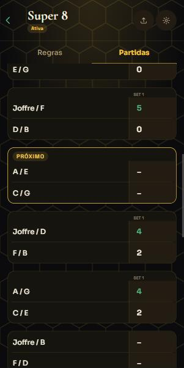
Jogos: SET 1, verde no game ganho, selo PRÓXIMO.
Capítulo 5
Criar uma competição
Quem administra o grupo cria as competições pelo botão amarelo +.
Toque no + e escolha Nova Competição. Os outros atalhos do menu são Jogo Rápido e Marcação ponto a ponto.
Preencha as Informações gerais: nome, tipo (Liga, Grupos + Eliminatórias, Mata-mata, Avulso ou Super 8), “Competem em” (duplas ou individual), gênero, categoria de nível, data e horário. Local e descrição são opcionais.
Escolha o formato de disputa (por exemplo, melhor de 1 set com 4 games e tie-break a 7). É ele que define quando o set termina e quando entra o tie-break.
Opções extras: Repetir toda semana cria uma série; Abrir inscrições deixa os jogadores pedirem para entrar.
Confira o Resumo antes de criar. O botão Criar competição só habilita quando tudo obrigatório está preenchido; o aviso em vermelho diz o que falta.
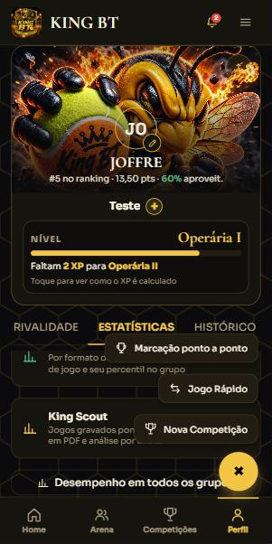
O botão + e seus atalhos.
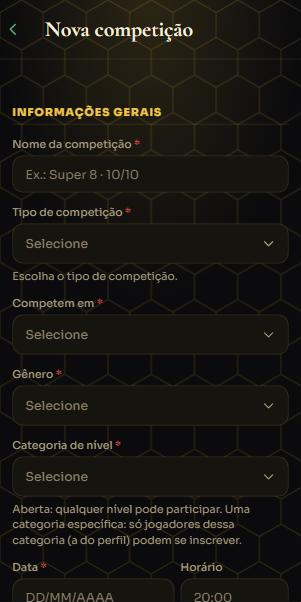
Informações gerais.
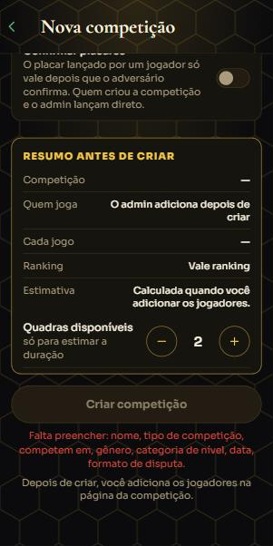
Resumo antes de criar.
Capítulo 6
Registrar o placar à mão
Quando o jogo acabou e você só quer lançar o resultado, toque no jogo para abrir o Registrar Placar.
Use − e + para os games de cada dupla em cada set. O sistema respeita o formato: ele não deixa passar do limite do set.
Se o formato tem mais de um set, toque em + Adicionar set. O placar de sets (por exemplo, 1 × 0) é calculado sozinho.
Tie-break obrigatório. Quando um set termina como termina um set decidido no tie-break (4×3 num formato de 4 games, por exemplo), aparece a linha Tie-break. Informe os pontos dos dois lados (ex.: 7–5). O tie-break vai a 7 pontos, com 2 de diferença, e o vencedor do set precisa ganhar o tie-break. Enquanto estiver vazio ou inválido, o botão Salvar fica desabilitado.
O tie-break aparece depois como número pequeno ao lado dos games (4³ – 3⁷) no cartão do jogo, no Feed e nos relatórios.
Rascunho guarda um placar incompleto sem valer para o ranking. Administradores podem Corrigir ou Apagar placar de um jogo já salvo.
Os botões Marcação ponto a ponto e Usar King Scout no mesmo quadro levam aos capítulos 8 e 9. Este último só aparece para o super admin.
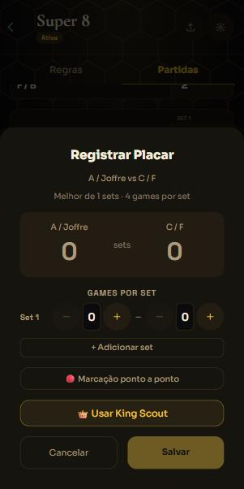
Registrar Placar de um jogo ainda sem placar.
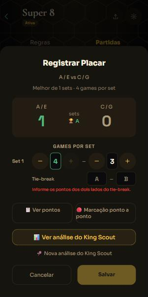
Set 4×3: o tie-break é obrigatório e o Salvar espera.
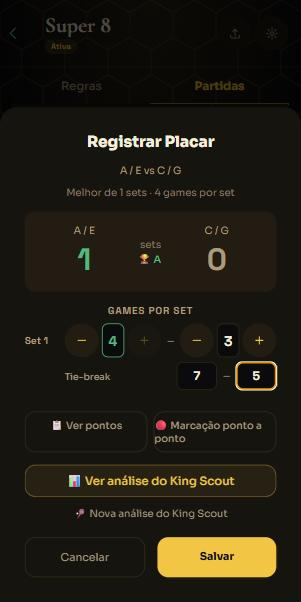
Tie-break 7–5 informado: Salvar liberado.
Capítulo 7
Competição Avulsa
O formato Avulso é uma sessão livre: você lança cada jogo que aconteceu, sem tabela pré-definida.
Abra a competição e toque em Registrar jogo (ou toque num jogo “Aguardando placar”).
Informe os games de cada dupla: toque no número e digite, ou use − e +. Cada linha é um set (“Set 1”, “Set 2”…); use + Adicionar set para mais.
No Avulso o formato não é definido, então o app não adivinha o tie-break. Se o set teve tie-break, marque a caixa Tie-break abaixo do set e informe os Pts de cada dupla, cada um embaixo dos games dela. Marcado, os pontos são obrigatórios.
O placar pode terminar empatado: o Salvar não exige vencedor.
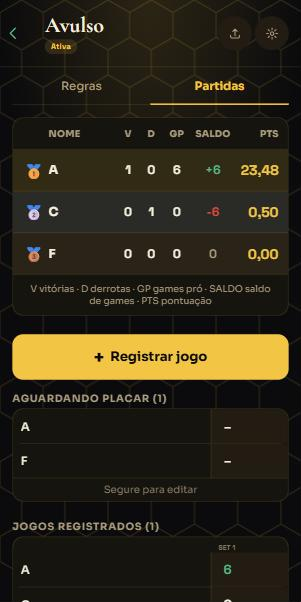
Competição Avulsa: “Registrar jogo” e jogos aguardando placar.
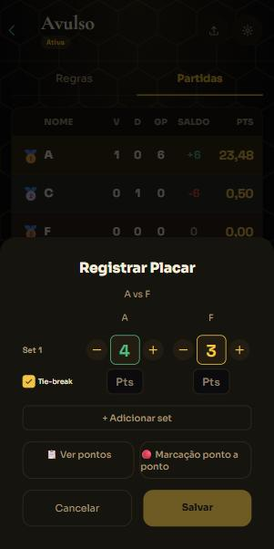
Caixa Tie-break marcada: Pts pendentes.
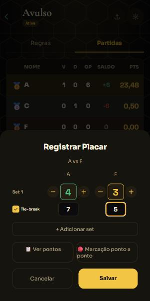
Tie-break 7–5 informado.
Capítulo 8
Marcação ponto a ponto
Para marcar o jogo enquanto ele acontece, ponto por ponto, sem as estatísticas detalhadas do scout.
Toque no + e em Marcação ponto a ponto. A tela lista as competições com jogos pendentes (“8/14 jogos · Próximo disponível”).
Toque na competição: o app abre o próximo jogo. Ele aparece como cartão PRÓXIMO; toque nele para começar.
No placar ao vivo, cada dupla tem uma linha com o SET em andamento e os PONTOS do game (0, 15, 30, 40). Toque em + na dupla que fez o ponto; o − desfaz. O game, o set e o tie-break avançam sozinhos.
Pontos (canto superior) mostra o histórico de pontos do jogo. Sair volta sem perder o que foi marcado.
No Avulso, o botão Fechar set encerra o set atual (quem tem mais games vence) e Registrar placar grava o resultado.
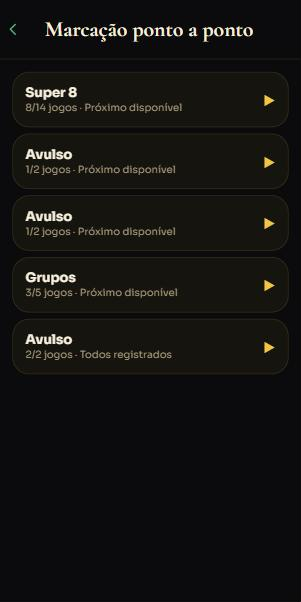
Competições com jogos para marcar.
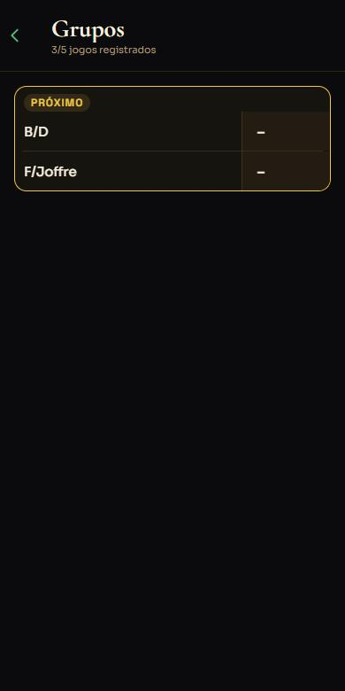
Próximo jogo da competição.
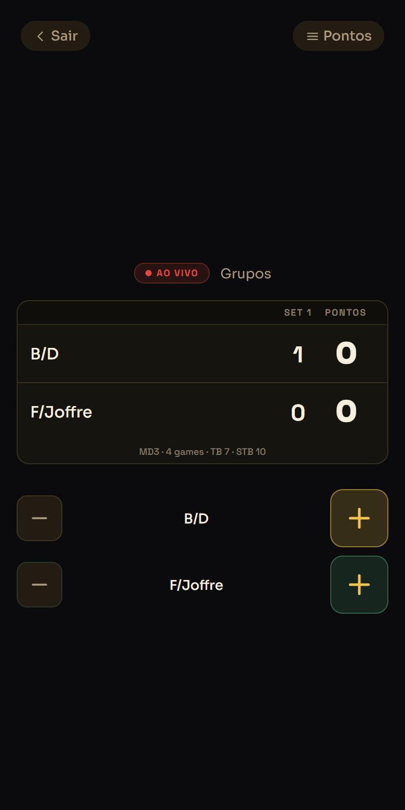
Placar ao vivo.
Capítulo 9
King Scout: marcar um jogo
O King Scout registra cada ponto com detalhe (quem sacou, como o ponto terminou, golpe, lado, posição na quadra). Para marcar, é preciso ser super admin; todos os membros podem consultar o resultado (capítulo 11).
Abra o jogo (ainda sem placar) e toque em 👑 Usar King Scout. Se já existe análise do jogo, aparecem Continuar King Scout ou Ver análise do King Scout.
No topo, o selo mostra o modo (Simples, Padrão ou Avançado) e o botão Encerrar fecha a análise. O modo só pode ser trocado antes do primeiro ponto.
O placar tem uma linha por dupla, a coluna do set e os PONTOS do game. A dupla que está sacando recebe a marca “● sacando”.
Ponto rápido, embaixo do placar, soma o ponto de uma dupla sem detalhar a jogada.
Modo
O que registra
Simples
Sacador, finalização (Ace, Winner, Forçou Erro, Erro não forçado, Erro de saque, Erro de devolução), golpe, quem fez e lado. Sem dados do saque nem duração.
Padrão
Tudo do Simples + posição e direção do saque + duração do ponto.
Avançado
Tudo do Padrão + qualidade do saque, devolução, primeira bola, situações e comentário.
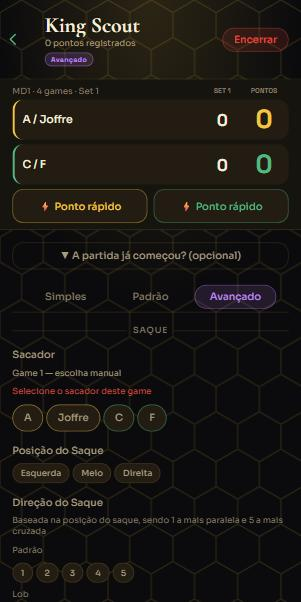
Início do King Scout (modo Avançado).
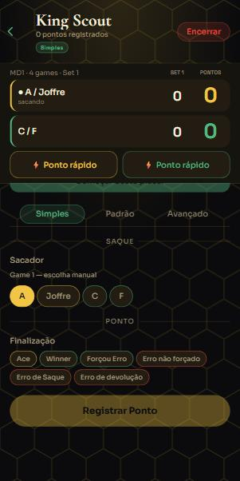
Modo Simples: sacador e finalização.
Capítulo 9
King Scout: registrar um ponto
O mesmo caminho vale para os três modos; cada modo só acrescenta informação.
Escolha o sacador. A rotação é automática: em duplas, os dois primeiros games são manuais e dali em diante o sacador é sugerido; no tie-break o primeiro saca 1 ponto e depois cada jogador saca 2.
Escolha a Finalização. Os chips têm borda colorida (verde: ponto ganho com jogada; vermelho: erro; dourado: Ace).
Responda, nesta ordem: Como o Winner foi feito? (o golpe), Quem fez e De que lado (Forehand ou Backhand, opcional). Nos erros, “quem fez” é quem errou.
Mapa de Calor (opcional): nos Winners, Forçou Erro e Erros não forçados, marque no primeiro grid onde estava quem fez o lance e no segundo para onde a bola foi (no erro não forçado vale a bola fora). Use Inverter lados do mapa se precisar.
Toque em Registrar Ponto. Os últimos pontos aparecem embaixo e podem ser editados (toque neles) ou desfeitos (↩ Desfazer).
A partida já começou? Se você abriu o scout no meio do jogo, toque nessa opção antes do primeiro ponto, informe os sets já jogados e os games do set atual e toque em Começar deste placar. O app confere se o placar é possível no formato da competição.
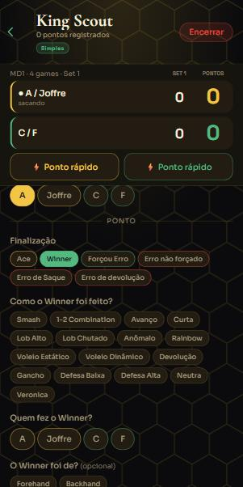
Golpe, quem fez e lado.
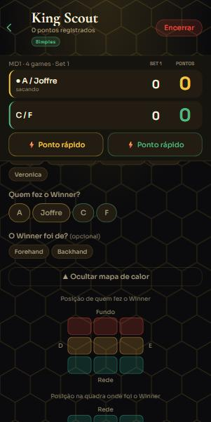
Mapa de calor: posição de quem fez.
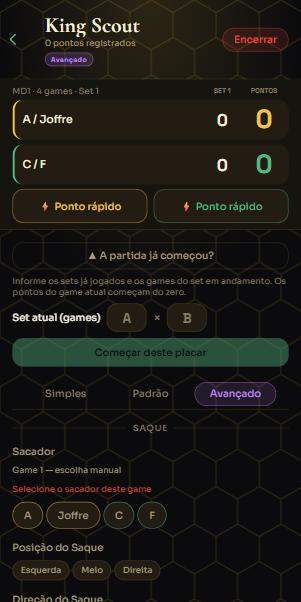
A partida já começou?
Capítulo 10
King Scout: o relatório
Ao encerrar, o relatório da partida abre sozinho. Ele também fica no histórico (capítulo 11).
Resumo: placar em sets, games por set (com tie-break em número pequeno), pontos ganhos, 40×40, winners, aces, erros, confirmação de saque e break points.
Stats: tabela por atleta. A estrela ★ marca o melhor da coluna (o menor, nos erros).
Qualidade, Saques e Finalizações: gráficos por jogador. A aba Mapa só aparece quando algum lance teve posição marcada: escolha a dupla, o tipo de finalização e, se quiser, o jogador.
Dinâmica: gráfico de momento do jogo e os Momentos da partida (sequências de 3 ou mais pontos seguidos e viradas).
Log: todos os pontos, do mais recente ao primeiro, com o placar depois de cada ponto (“3x2 40x0”, “Set 1 encerrado”, “Fim · 1x0 em sets”).
No topo: ⬇ PDF gera o relatório da partida; Excluir apaga a análise (pede confirmação e não muda o placar da competição).
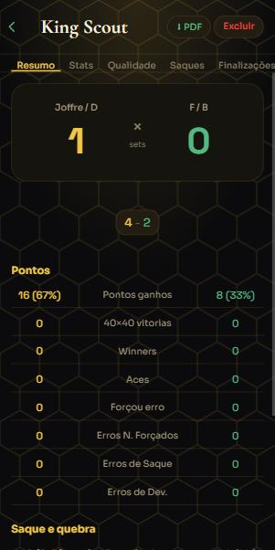
Resumo.
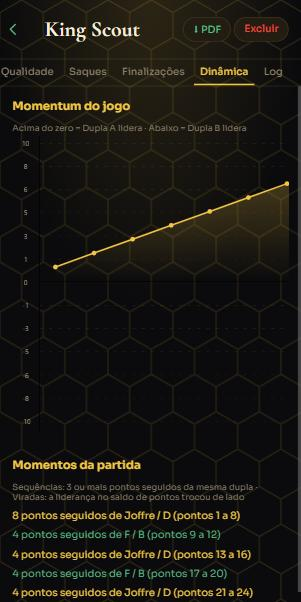
Dinâmica e momentos.
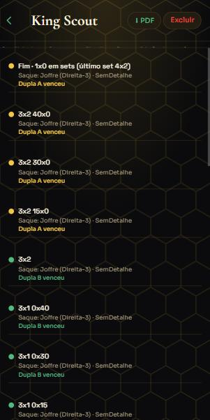
Log: placar depois do ponto.
Capítulo 11
King Scout: histórico, atletas e PDF
Qualquer membro do grupo pode consultar os jogos gravados pelo scout.
Abra o Perfil, entre na aba ESTATÍSTICAS e role até o atalho King Scout (“Jogos gravados ponto a ponto, relatórios em PDF e análise por atleta”).
O histórico lista os jogos do grupo atual, do mais recente ao mais antigo, com a tabela de sets (tie-break em número pequeno). Toque num jogo para abrir o relatório, ou em ⬇ PDF para gerar o PDF só desse jogo.
⬇ Relatório dos jogos gera um PDF com todos os jogos gravados: data, duplas, placar por set, pontos e situação.
📈 Atletas abre a análise de um atleta ao longo de várias partidas. Escolha o período (7, 30, 90 dias ou tudo) e o atleta.
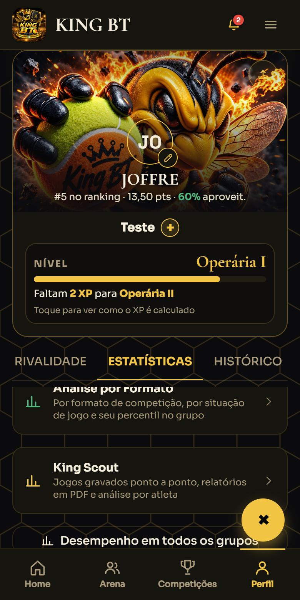
Atalho King Scout no perfil.
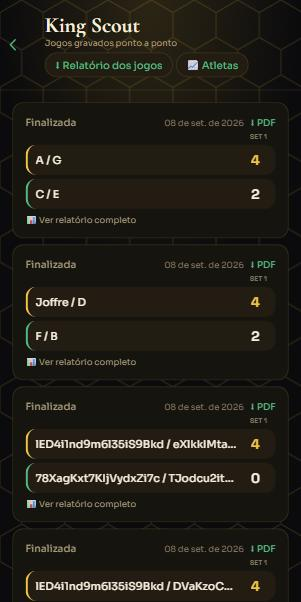
Histórico de jogos gravados.
Capítulo 11
Análise do atleta
Soma o que o scout registrou do atleta em todas as partidas do período.
Números: partidas (com vitórias e derrotas), nota média, confirmação de saque, winners, aces, forçou erro e os erros de saque, devolução e não forçados.
Evolução recente compara as últimas 3 partidas com as anteriores (precisa de pelo menos 4 partidas). Evolução da nota é o gráfico partida a partida: verde para vitória, vermelho para derrota.
O que treinar traz sugestões baseadas nos números (só aparecem quando há dados suficientes).
Adversários: toque num adversário para ver como jogar contra ele. Por competição mostra o saldo em cada uma.
⬇ PDF, no topo, gera o relatório do atleta.
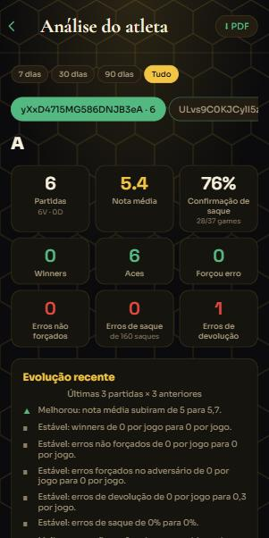
Números do atleta e evolução recente.
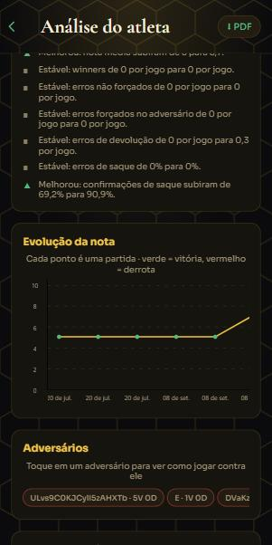
Evolução da nota e adversários.
Capítulo 12
Perfil
O seu cartão no grupo, com nível, conquistas e estatísticas.
No topo, o cartão mostra seu círculo com as iniciais, o nome, a posição no ranking, os pontos e o aproveitamento. O lápis ao lado do círculo edita o perfil; o botão no canto envia o cartão para compartilhar.
O nome do grupo traz o + para trocar ou entrar em outro grupo.
O Nível sobe com o XP. Toque no quadro do nível para ver como o XP é calculado (jogos, vitórias, competições, avaliações, honrarias e conquistas).
As abas: SOBRE (seus dados), AVALIAÇÃO (autoavaliação e colegas), CONQUISTAS, RIVALIDADE, ESTATÍSTICAS e HISTÓRICO.
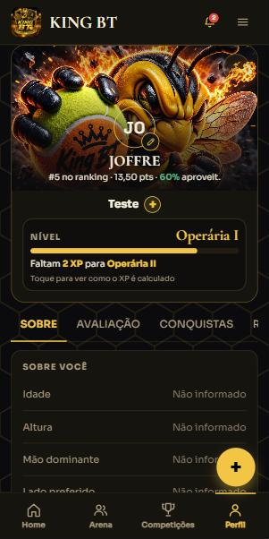
Cartão do perfil.
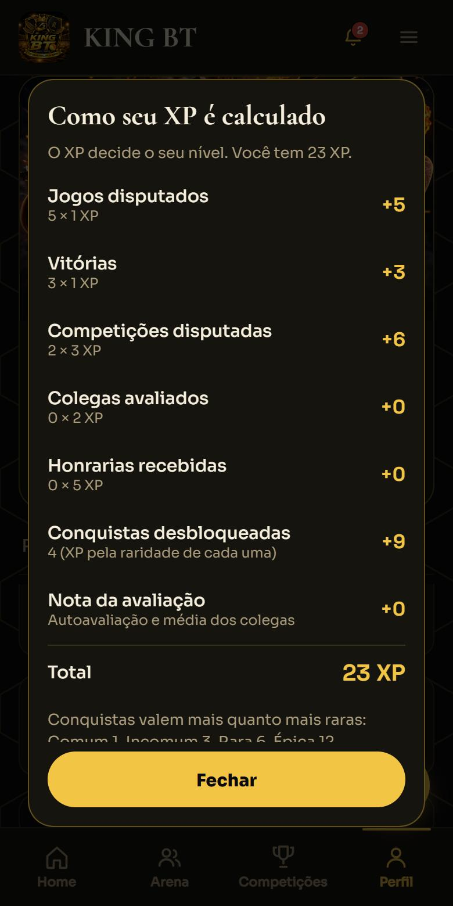
Como o XP é calculado.
Capítulo 13
Dúvidas frequentes
Não vejo o botão “Usar King Scout”.
Marcar jogos no scout é exclusivo do super admin. Os demais membros consultam o histórico, os relatórios e as análises de atleta pelo Perfil.
Por que o Salvar está desabilitado?
Provavelmente o set terminou em tie-break e faltam os pontos dele (ou estão inválidos), ou o placar ainda não define um vencedor. A mensagem embaixo do set diz o que falta.
O tie-break não aparece no registro à mão.
Ele só aparece quando o set termina como termina um set decidido no tie-break no formato da competição (por exemplo, 4×3 em 4 games). No Avulso, marque a caixa “Tie-break” no set.
Posso empatar um jogo?
No Avulso, sim. Nas demais competições o jogo precisa ter um vencedor.
Apaguei uma análise do scout sem querer.
Ela não tem como ser desfeita pelo app. O placar da competição não muda ao excluir a análise; só os pontos detalhados e o relatório se perdem.
O botão + ficou “travado” em X.
O menu fecha sozinho ao trocar de tela. Se ainda assim ficar aberto, toque no botão de novo.
Como atualizo o app?
Quando há versão nova, uma barra de atualização aparece no app; toque nela. No navegador, basta recarregar a página.